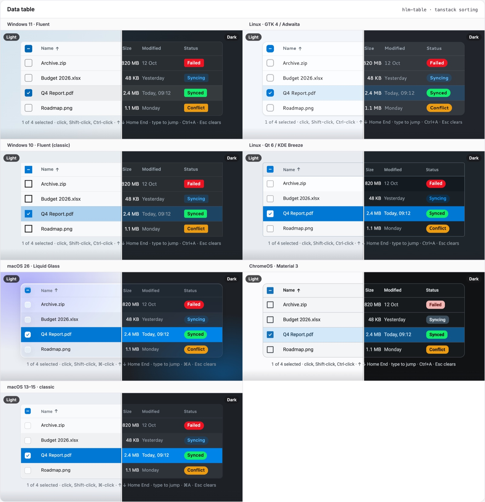
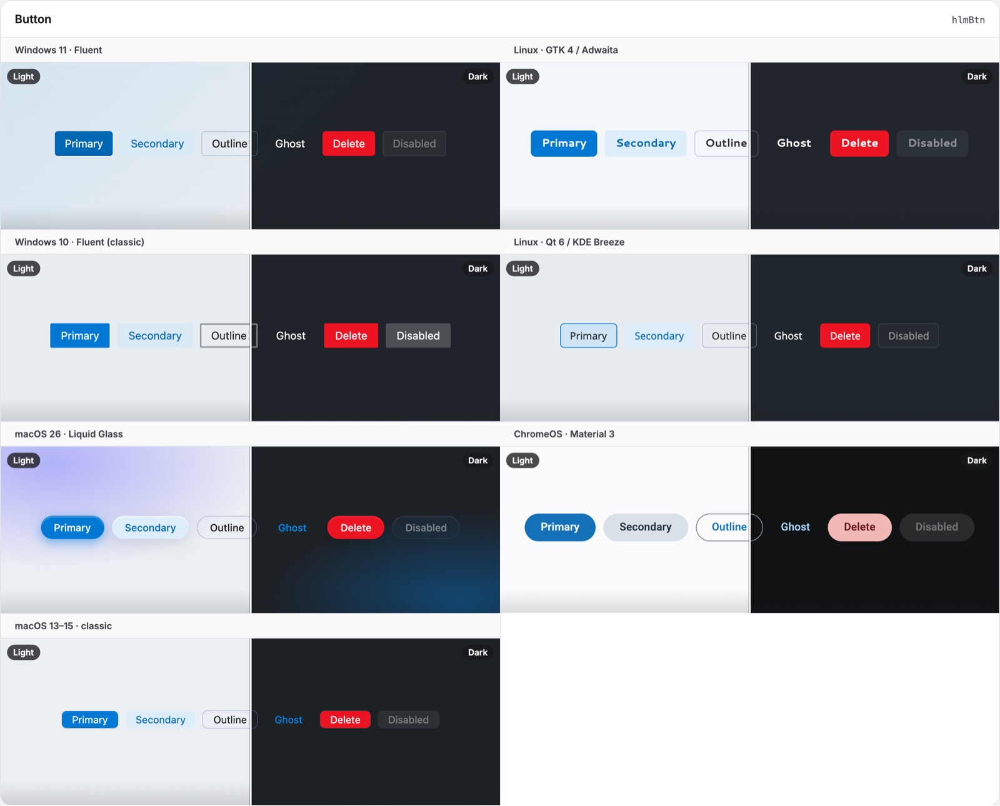
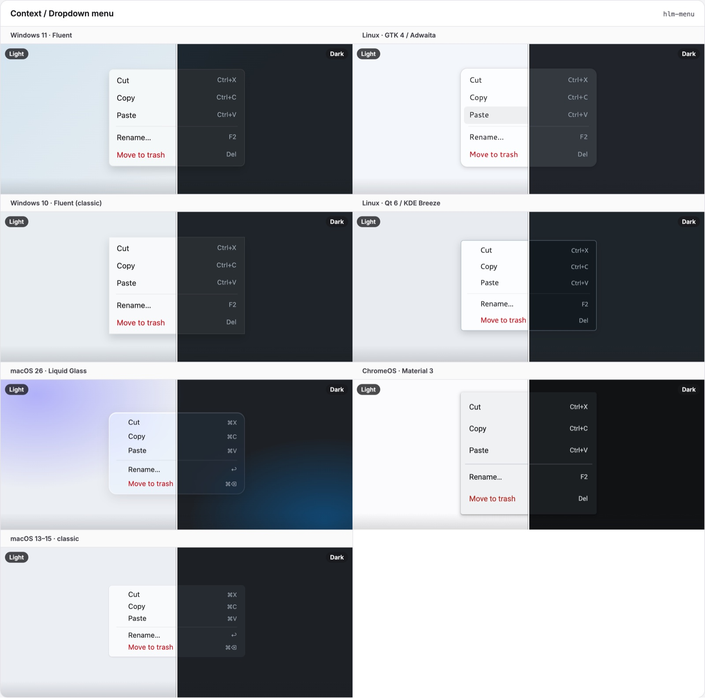

Helm. Behave like a desktop app.
The theme makes spartan/ui look native. Helm makes it behave native: the selection model of a file manager, Enter and Esc that press the right button, and dialog buttons in the order each OS expects.
npm install @spartan-native/helm// after the theme
@use '@spartan-native/theme/styles/spartan-native';
@use '@spartan-native/helm/styles/spartan-native-helm';The selection model your users already know.
Lists and tables that select like Finder, Explorer and Files. Try it: click, Shift-click, Ctrl-click, use the arrow keys, or type a name.
- Click
- Select one row
- Ctrl-click
- Toggle a row
- Shift-click
- Select the range from the anchor (with Ctrl: add it)
- ↑ ↓ Home End
- Move and select; Shift extends; Ctrl moves the focus only
- Space
- Select the focused row; with Ctrl, toggle it
- Ctrl A
- Select all
- Esc
- Clear the selection (then lets a dialog close)
- Typing
- Jump to the next row starting with the text; a repeated letter cycles
- Enter, double-click
activatedemits the row's key
On macOS, ⌘ replaces Ctrl and ⌘↑ / ⌘↓ jump to the ends. ARIA: listbox/option
or grid/row, aria-selected, aria-activedescendant.
<div snSelectable [(selection)]="selected"
(activated)="open($event)" aria-label="Files">
@for (f of files; track f.id) {
<div snSelectableItem [value]="f.id">{{ f.name }}</div>
}
</div><table hlmTable snSelectable="grid" [(selection)]="selected">
<tbody hlmTBody>
@for (row of rows; track row.id) {
<tr hlmTr snSelectableItem [value]="row.id">…</tr>
}
</tbody>
</table>
The logic is a set of pure functions in selection-model.ts (selectionClick,
selectionMoveBy, typeaheadIndex, …), usable without Angular.

Enter saves. Esc cancels.
Mark the default and cancel buttons once. In the surrounding dialog or form, Enter presses one and Esc presses the other, the way every desktop dialog works.
- Enter is left alone in multi-line text, on other buttons and links, and in lists and menus
- A disabled button is skipped
- Dialogs and forms are scopes already;
snActionScopemarks a custom area
<form>
<input hlmInput />
<button hlmBtn variant="outline" snCancelAction (click)="close()">Cancel</button>
<button hlmBtn snDefaultAction (click)="save()">Save</button>
</form>The right button order, everywhere.
Windows and KDE put the default button first. macOS, GNOME and ChromeOS put it last. The skin sets
--sn-dialog-order-*, and hlm dialog and alert-dialog footers follow it without the directive.
Windows
Default · other · cancel
KDE Plasma
Default · other · cancel
macOS · ChromeOS
Other · cancel · default
GNOME
Cancel · other · default
No per-OS rules. Just tokens.
Helm's styles read the theme's row tokens, so each skin decides how a selected row looks: a pill on Windows, an accent fill on macOS, a tint on GNOME.
| Token | Windows 11 | macOS 26 | GNOME |
|---|---|---|---|
--sn-row-selected-bg |
neutral fill + accent pill | accent fill, white text | accent tint |
--sn-row-selected-bg-unfocused |
same | grey (also when the window is inactive) | same |
--sn-row-focus-ring |
2px foreground | 2px accent | 2px accent |
Hooks: [data-slot="sn-selectable"], [data-slot="sn-selectable-item"] with
[data-selected] and [data-active]. Tip: derive secondary text in rows from
currentColor, so it stays readable on the macOS accent fill.


Directives.
| Directive | What it does |
|---|---|
snSelectable + snSelectableItem |
The desktop selection model for lists (role="listbox") and tables
(snSelectable="grid"). Inputs: selection (two-way), multiple,
snSelectableLabel for type-ahead text
|
snDefaultAction |
Enter in the surrounding dialog or form presses this button |
snCancelAction |
Esc in the surrounding dialog or form presses this button |
snActionScope |
Marks a custom area for the two above (dialogs and forms are scopes already) |
snDialogButtons |
A row of dialog buttons in the OS's order |
Peer dependency: @spartan-native/theme. Angular ^22.2.0, spartan/ui
^1.9.0.